第一章 丰富的图形世界（高效培优单元测试·强化卷）
（考试时间：120分钟 试卷满分：120分）
一、选择题（本大题共10小题，每小题3分，共30分）
1．如图所示是一款茶叶的包装盒，它对应的立体图形的名称是（ ）
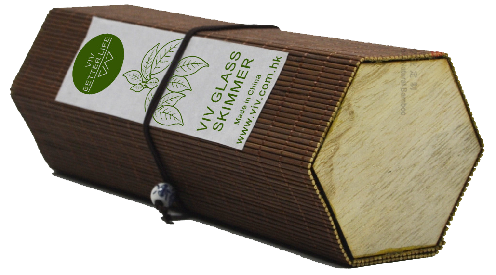
A．圆柱 B．长方体 C．五棱柱 D．六棱柱
2．如图，将直角三角形 绕直角边
绕直角边 所在直线旋转一周，得到的几何体是（ ）
所在直线旋转一周，得到的几何体是（ ）
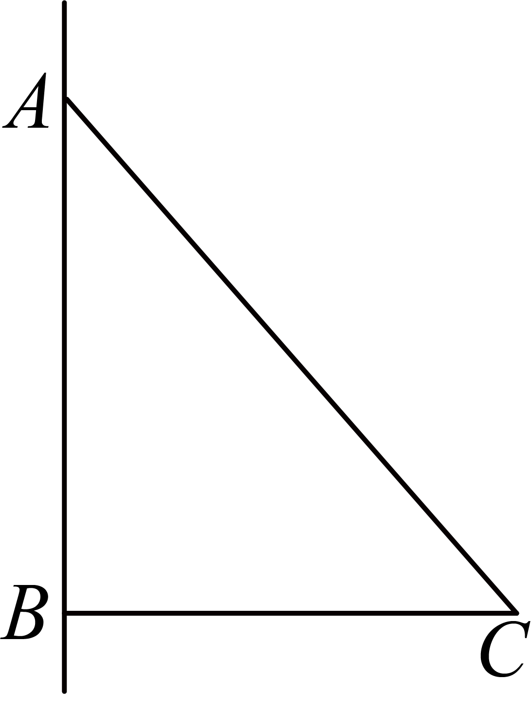
A．圆柱 B．球 C．四棱柱 D．圆锥
3．一个正方体的展开图如图所示，把它折叠成正方体后，有“的”字一面的相对面上的字为（ ）
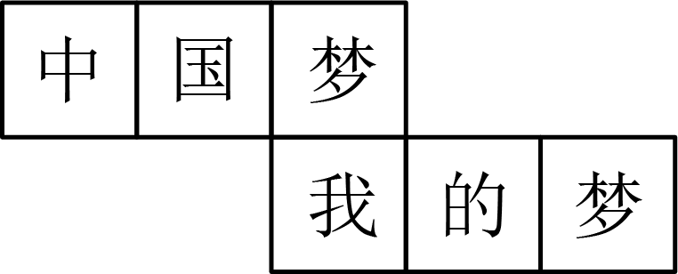
A．我 B．中 C．国 D．梦
4．如图，该几何体从左面看得到的图形为（ ）
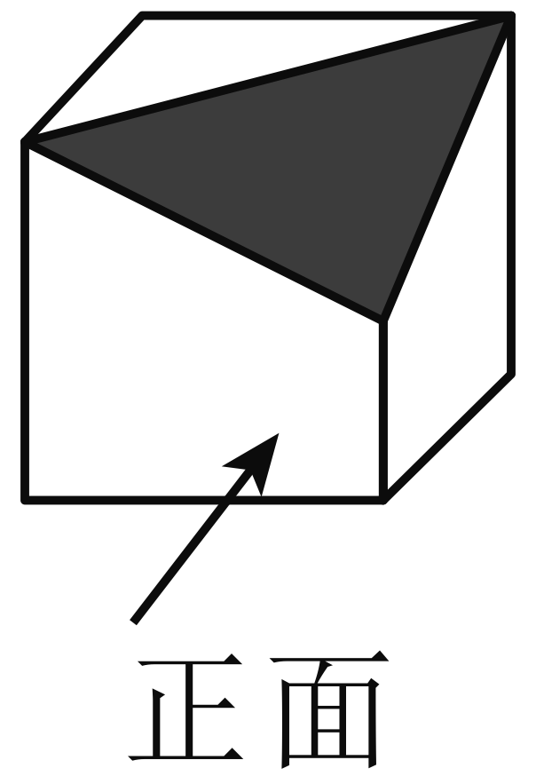
A． B．
B．
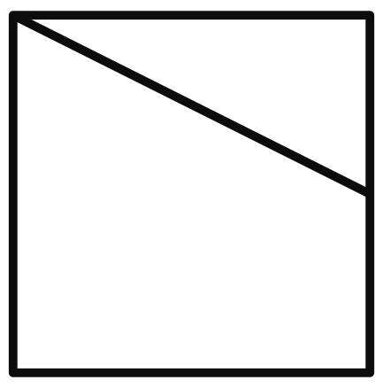
C． D．
D．
5．下列图形经过折叠可以围成一个完整的正六棱柱的是（ ）
A．
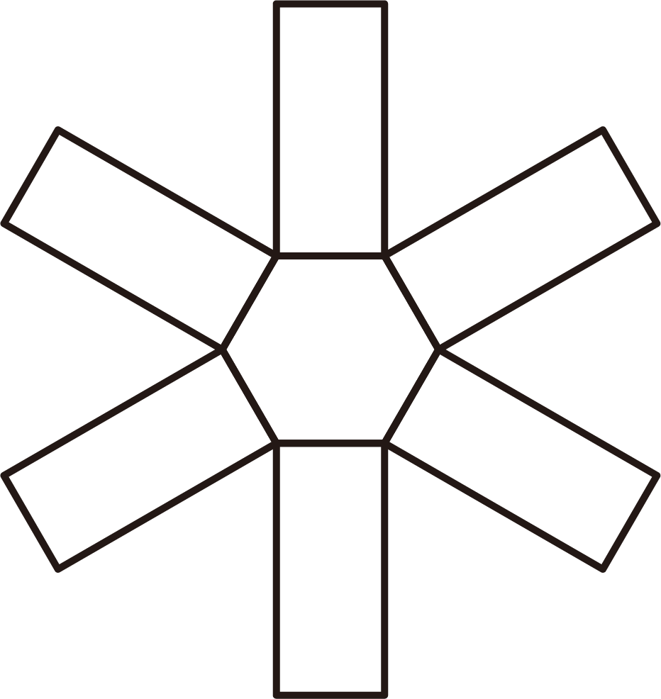
B． C．
C．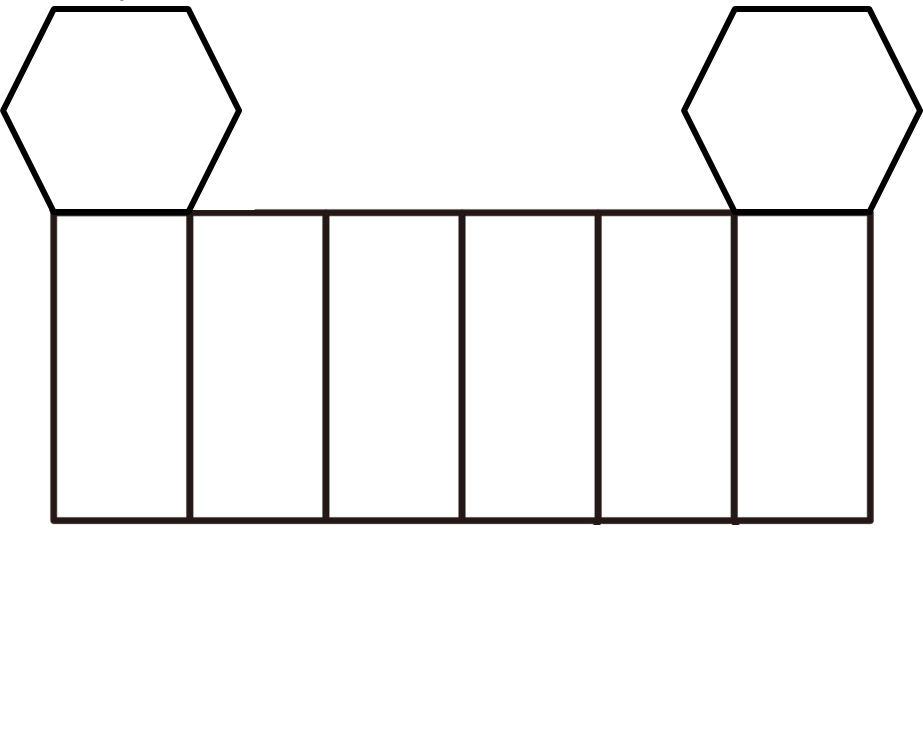
D．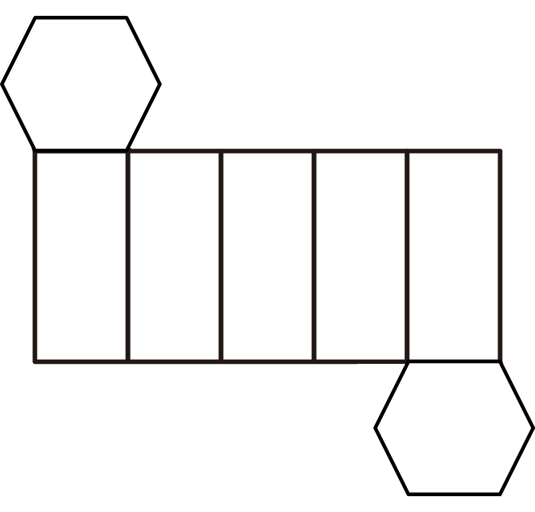
6．下面图形沿虚线不能围成一个正方体的是（ ）
A．
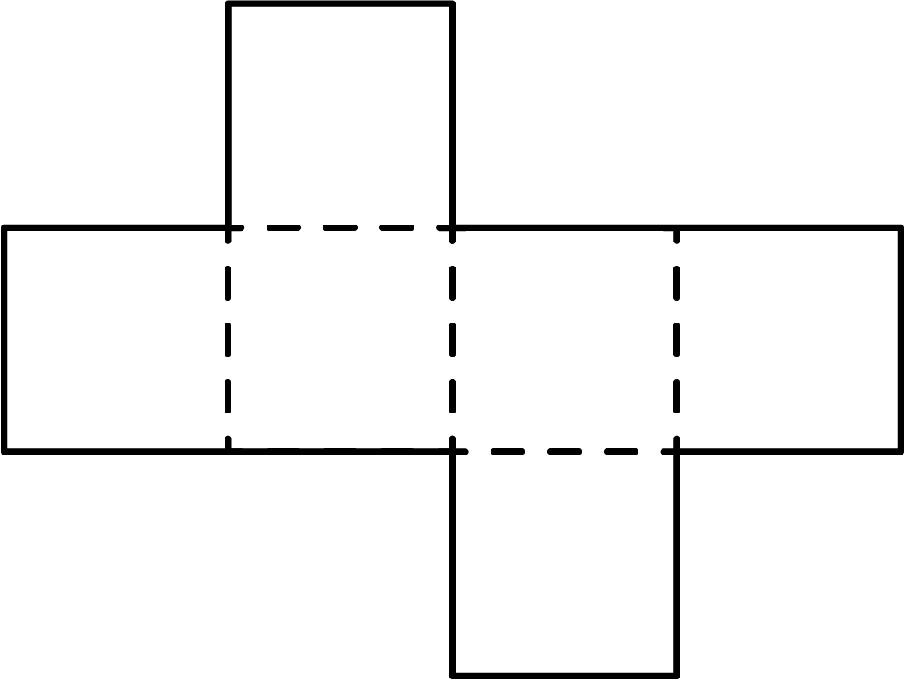
B．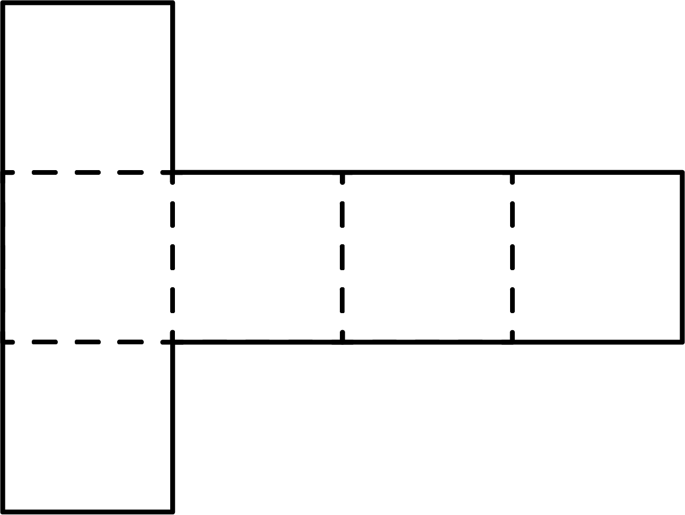
C．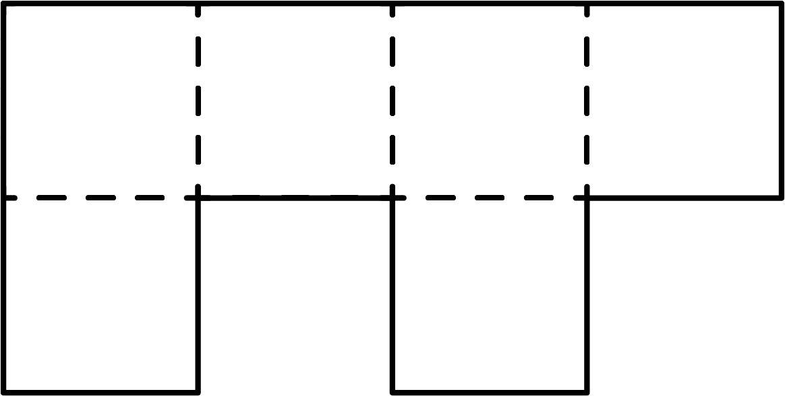
D．
7．用一个平面截一个几何体，得到的截面是矩形，则这个几何体不可能是（ ）
A．
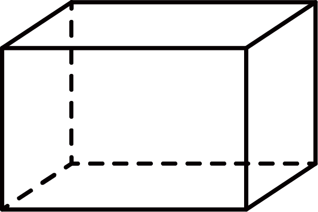
B． C．
C．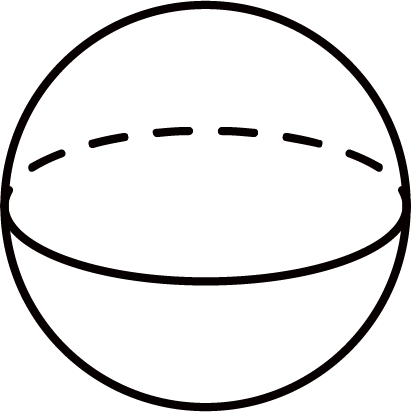
D．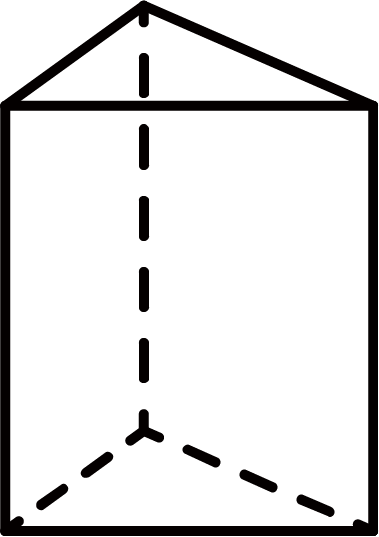
8．下列说法：①三棱锥的底面是三角形；② 棱柱有个面，
棱柱有个面， 个顶点，
个顶点， 条棱；③若直棱柱的底面边长都相等，则它的各个侧面的面积也相等；④圆锥有两个面，底面与侧面相交形成曲线；⑤时钟的秒针旋转时，形成一个圆面，这说明了点动成线；⑥如果用一个平面去截八棱柱，截面形状一定不是九边形．其中正确的有（ ）
条棱；③若直棱柱的底面边长都相等，则它的各个侧面的面积也相等；④圆锥有两个面，底面与侧面相交形成曲线；⑤时钟的秒针旋转时，形成一个圆面，这说明了点动成线；⑥如果用一个平面去截八棱柱，截面形状一定不是九边形．其中正确的有（ ）
A．3个 B．4个 C．5个 D．6个
9．小丽制作了一个如图所示的正方体礼品盒，其对面图案都相同，那么这个正方体礼品盒的表面展开图可能是（ ）

A． B．
B． C．
C． D．
D．
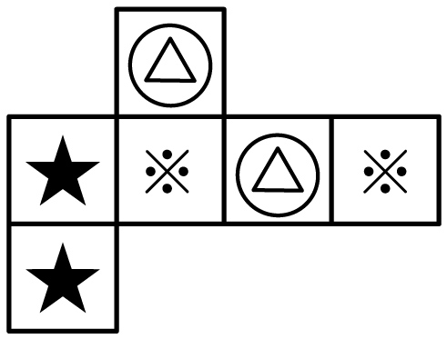
10．如图是国内某品牌牛奶长方体型包装盒的展开图（粘贴部分忽略不计），展开图的数据大小如图中所示，从该包装盒说明上知道，该牛奶含优质乳蛋白3.6克
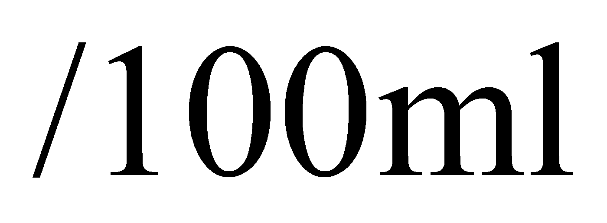
，则一盒这样的牛奶含优质乳蛋白（按装满计算）（ ）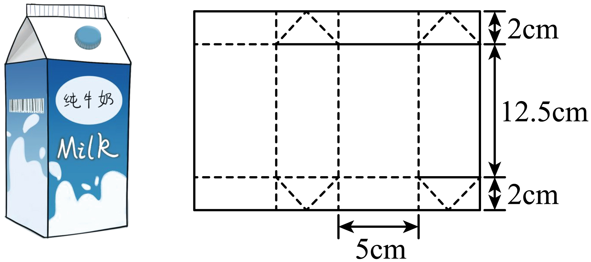
A．4.5克 B．9克 C．90克 D．900克
二、填空题（本大题共6小题，每小题3分，共18分）
11．笔尖在纸上快速滑动写出了一个又一个字，从数学的角度解释为 ．（填“点动成线”或“线动成面”或“面动成体”）
12．如图，图中柱体的个数是 个．

13．如图是某几何体从不同方向看所得图形，根据图中数据，求得该几何体的侧面积为 （结果保留 ）．
）．

14．如图，纸板上有19个无阴影的小正方形，从中选涂1个，使它与图中5个有阴影的小正方形一起能折叠成一个正方体纸盒，一共有 种选法．
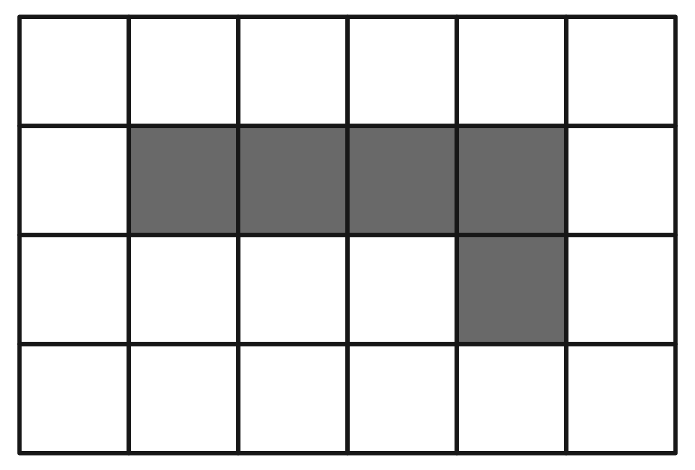
15．用小立方块搭一个几何体，下面分别是它的正面、上面看到的形状．搭成该几何体至少需要 个相同大小的小立方体．
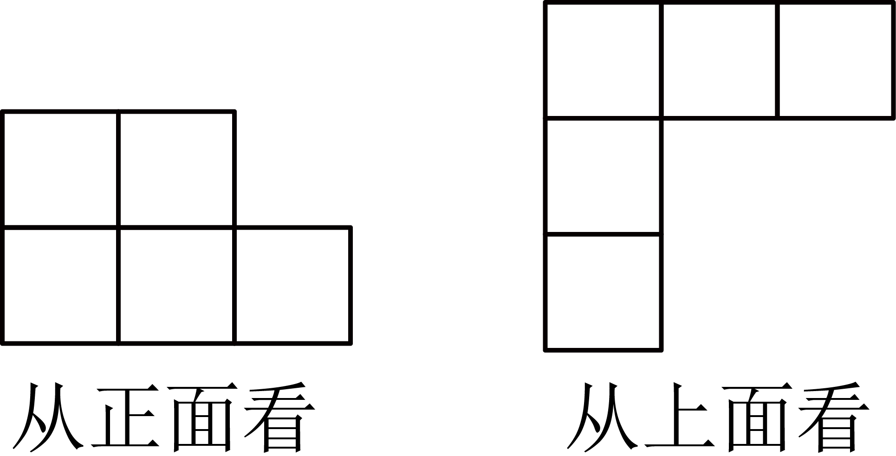
16．一个直角三角形直角边为5，12，若以直角边所在直线为轴旋转一周所成旋转体的体积为 ．（保留π）
三、解答题（第17，18，19，20题，每题6分；第21，22，23题，每题8分；第24，25题，每题12分；共9小题，共72分）
17．如图，第二行的图形绕虚线旋转一周，便能形成第一行的某个几何体，用线连一连．

18．如图，是由一些小正方体搭成的几何体，请画出从正面、左面、上面看到的图形．

19．指出如图所示的立体图形中的柱体、锥体、球．

柱体：___________________________
锥体：___________________________
球体：___________________________（填序号）
20．如图是一个食品包装盒的展开图（图中的六边形的六条边相等）．
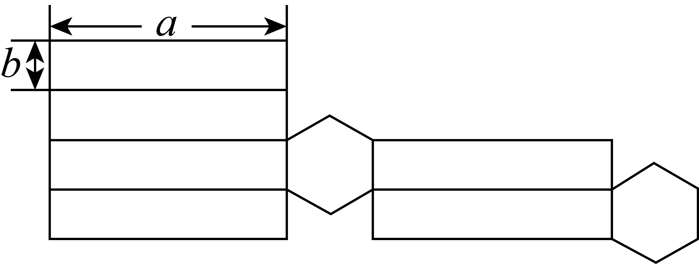
(1)请写出这个包装盒的立体图形的名称；
(2)请根据图中所标的尺寸，求这个立体图形的侧面积．
21．小丽跟妈妈到银行办理业务，她发现银行大堂的旋转门内部是由三块宽为2m、高为3m的玻璃隔板组成的．此情此景，让她想起了六年级数学第一章《丰富的图形世界》里的知识，她提出了以下问题，你能帮她解决吗？

(1)将此旋转门旋转一周，能形成的几何体是______．
(2)这能说明的事实是______（选择正确的一项填入）．
A．点动成线 B．线动成面 C．面动成体
(3)求该旋转门旋转一周形成的几何体的体积．（边框及衔接处忽略不计，结果保留π）
22．如图，是某几何体从三个方向分别看到的图形．
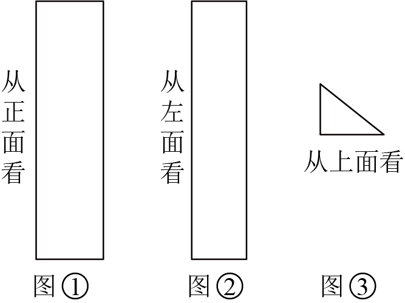
(1)说出这个几何体的名称；
(2)若图①的长为 ，宽为
，宽为 ；图②的宽为
；图②的宽为 ；图③直角三角形的斜边长为
；图③直角三角形的斜边长为
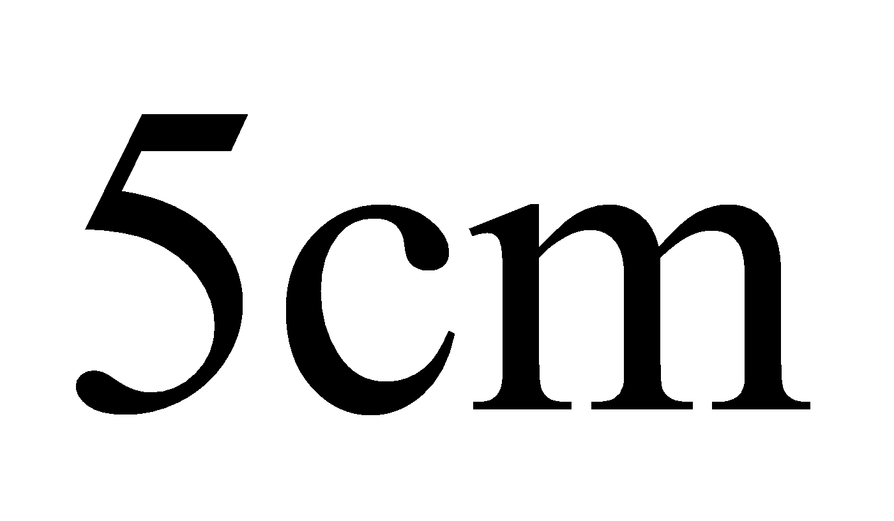
，试求这个几何体的所有棱长的和是多少？它的侧面积多大？23．下列图形中，图（a）是正方体木块，把它切去一块，得到如图（b）（c）（d）（e）的木块．

(1)我们知道，图（a）（b）的相关数据已经给出，请你将图（c），（d），（e）中木块的顶点数，棱数，面数填入表：
图号 | 顶点数x | 棱数y | 面数z |
（a） | 8 | 12 | 6 |
（b） | 6 | 9 |
|
（c） |
|
|
|
（d） |
|
|
|
（e） |
|
|
|
(2)如表，各种木块的顶点数，棱数，面数之间的数量关系可以归纳出一定的规律，请你试写出顶点数，棱数，面数之间的数量关系式．
图号 | 顶点数x | 棱数y | 面数z |
（a） | 8 | 12 | 6 |
（b） | 6 | 9 | 5 |
（c） | 8 | 12 | 6 |
（d） | 8 | 13 | 7 |
（e） | 10 | 15 | 7 |
24．如图1，一个不透明小立方体的六个面上分别标有数字1，2，3，4，5，6．

(1)若其展开图如图2所示，则：与数字“1”相对的面上的数字是________，与数字“2”相对的面上的数字是________，与数字“3”相对的面上的数字是________；
(2)将三个同样的小立方体搭成图3所示的几何体，请确定该几何体能看得到的面上数字之和最小为多少？
25．某班综合实践小组开展“制作长方体形纸盒”的实践活动．
【知识准备】
下列图形中，可能是无盖正方体的表面展开图的有________；（只填序号）

【制作纸盒】
综合实践小组利用边长为 的正方形纸板，按以下两种方式制作长方体形盒子．
的正方形纸板，按以下两种方式制作长方体形盒子．
如图⑤，先在纸板四角剪去四个同样大小边长为的小正方形，再沿虚线折合起来，可制作一个无盖长方体形盒子．如图⑥，先在纸板四角剪去两个同样大小边长为的小正方形和两个同样大小的小长方形，再沿虚线折合起来，可制作一个有盖的长方体形盒子，则制作成的无盖盒子的体积是有盖盒子体积的______倍；

【拓展探究】
若有盖长方体形盒子的长、宽、高分别为
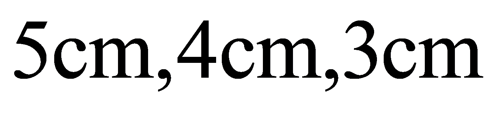
，将它的表面沿某些棱剪开，展成一个平面图形，则该长方体形盒子表面展开图的外围周长最小为________ ．
．